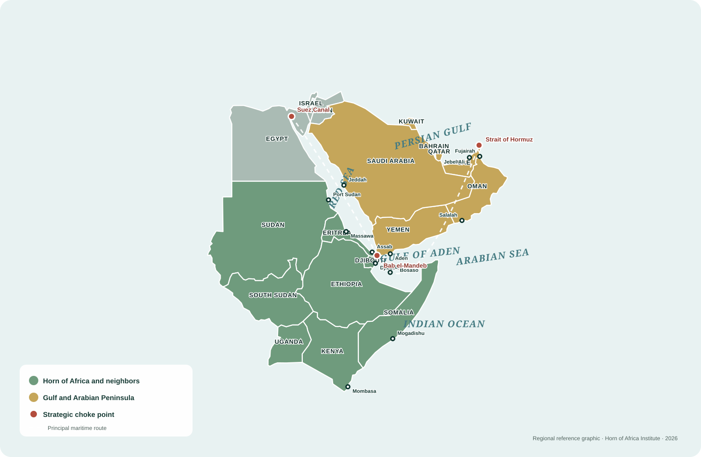

Maritime security
Bab el-Mandeb, shipping risks, naval presence, coastal security, and regional maritime governance.
Cross-program initiative
Research on the security, trade, infrastructure, investment, and diplomatic relationships connecting the Horn of Africa with the Red Sea and Gulf states.
The initiative examines how Gulf engagement, maritime routes, ports, infrastructure finance, food and energy systems, migration, security partnerships, and diplomatic competition reshape political authority, economic development, and regional cooperation across the Horn of Africa.
Its work connects the Institute’s three research programs and Foresight Lab. Research examines how institutional arrangements, commercial infrastructure, security partnerships, and investment decisions shape regional politics and economic development.

Bab el-Mandeb, shipping risks, naval presence, coastal security, and regional maritime governance.
Port development, logistics networks, trade routes, connections between ports and inland markets, and infrastructure competition.
Gulf investment, development finance, sovereign investment, procurement, and infrastructure governance.
Food-security investment, energy systems, water stress, supply resilience, and regional supply and resource risks.
Defense cooperation, military access, acquisition, training, external influence, and effects on state institutions and security policy.
Mediation, alliances, strategic competition, regional organizations, and shifts in alliances, mediation, and diplomatic cooperation.
The initiative develops strategic assessments, infrastructure and investment analysis, maritime-risk studies, regional scenarios, institutional mapping, and policy analysis for governments, international organizations, research institutions, and businesses working across the Horn of Africa, Red Sea, and Gulf.
Capital, energy, infrastructure, security cooperation, and diplomacy
Trade, livestock, food, labor, migration, information, and political response
Gulf institutions
Governments, development funds, investors, and firms direct capital, energy relationships, infrastructure projects, security cooperation, and diplomacy toward the Red Sea and Horn of Africa.